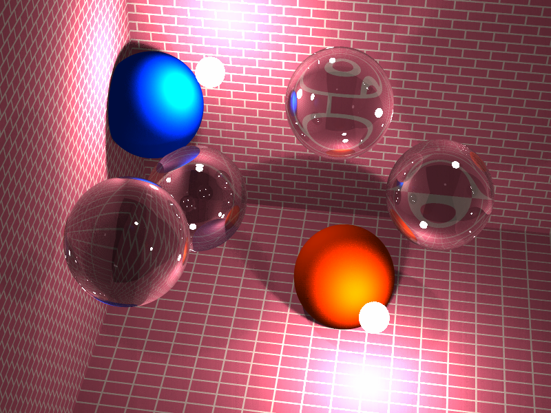

Given its age, the output from DBW-Render is pretty impressive: for its time, the shadowing algorithm produces very nice results, as shown below.

What I have here is a Windows console mode (that is, you run it from the Command Prompt) build, based on John Lowery's MS-DOS port of David's Amiga original. The only changes I have made to the core are to increase image resolution and colour depth. In addition, the whole package has been rebuilt with GCC 3 and a completely new program for displaying the ray tracer's output has been written. On my PC the above image is rendered in less than a minute at a resolution of 800x600, compared with about 8 hours on my old Amiga, and that was only at a resolution of 320x200. Source code is included, and it shouldn't be too hard to get it to build on Linux or some other modern Unix.
Executables and source code can be downloaded from DBW-Render's GitHub release page.
In case it is of any interest, also here is the original Amiga version. This is an emulator image of an Amiga disk with DBW-Render on it. This can either be written back to a real Amiga disk, or used with an Amiga emulator such as WinUAE.